Chapter 9 ER/Pgr Subtyping
In this section, we will look at whether there are differences in rat subtype using the following approaches:
- Creating our own subtyping approach using specific markers of interest (e.g. using PAM clustering)
- Using known gene list
- Using random genes (top 50, 100, 200 etc variable genes)
- PAM50 subtyping using the methods published by Parker et al. This method uses rsem scores to classify samples.
As the DN samples do have keratin expression, we will also try to determine the subtypes in these samples too.
In the below analyses, we will conduct this subtyping as follows:
- progression specific epithelial cohort
- characterisation specific epithelial cohort
- dn specific cohort (progression)
9.1 In-house classifier
The selected gene list includes three lists: A. is a mroe comprehensive list containing epithelial, mesenchymal markers and proliferation markers, B. has a more narrow list of subtype specific markers
- ‘Ar’, ‘Cd24’, ‘Cdh1’, ‘Foxa1’, ‘Gata3’, ‘Krt8’, ‘Krt18’, ‘Krt5’, ‘Vim’, ‘Erbb2’, ‘Esr1’, ‘Pgr’, ‘Mki67’, ‘Pcna’
- ‘Ar’, ‘Foxa1’, ‘Gata3’, ‘Erbb2’, ‘Esr1’, ‘Pgr’
We will be using variance stabilised counts in this section.
Firstly, we will look at the progression cohort. Note that the overlap between the two gene-sets are similar, and the heatmap is row-scaled.


## ColB
## ColA Basal Lum
## Basal 10 3
## Lum 0 7
We can perform a similar analysis to the characterisation cohort:
## ColD
## ColC Basal Lum
## Basal 3 0
## Lum 0 4
DN samples:

 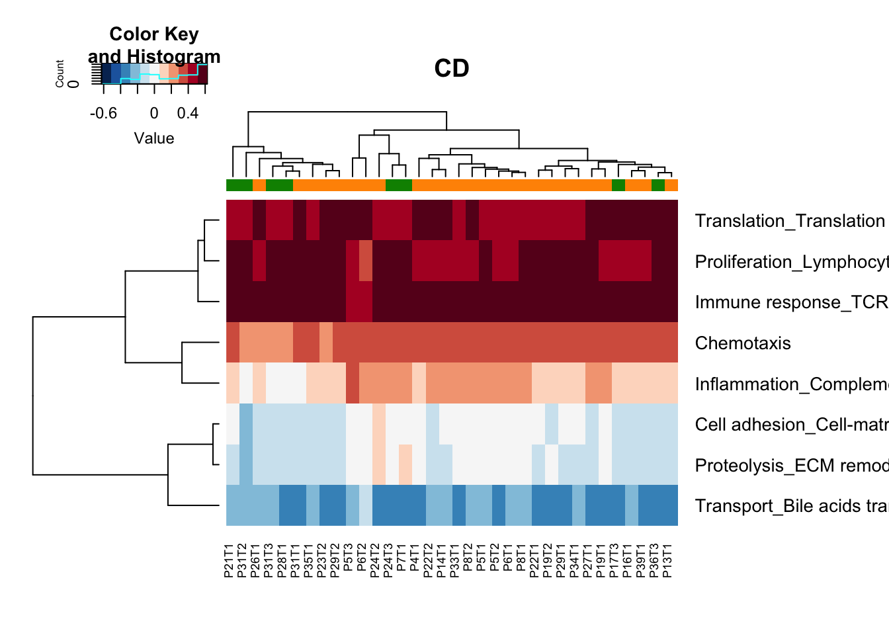
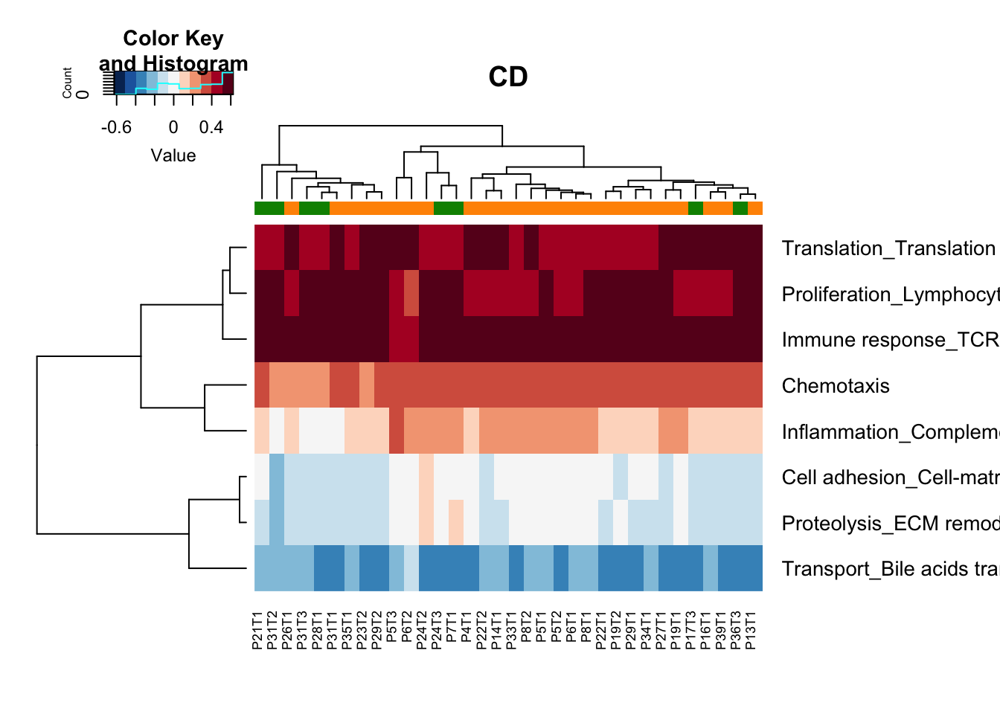
## ColF
## ColE Basal Lum
## Basal 9 7
## Lum 11 3
We can collate these different scores and assess whether there are similarities with PgR and ER staining:
 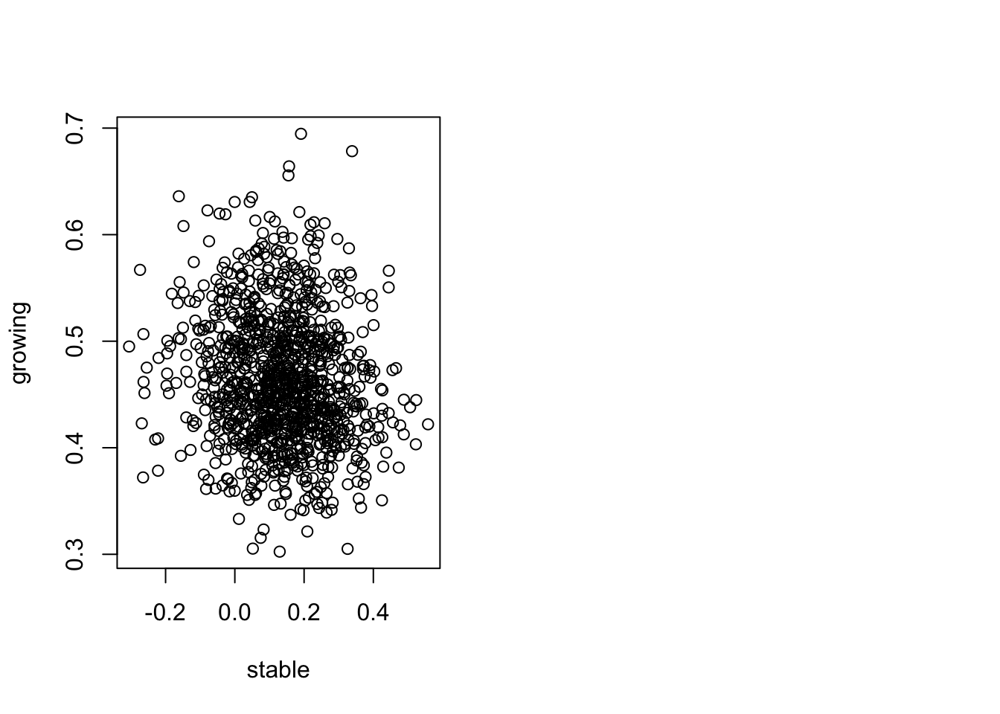
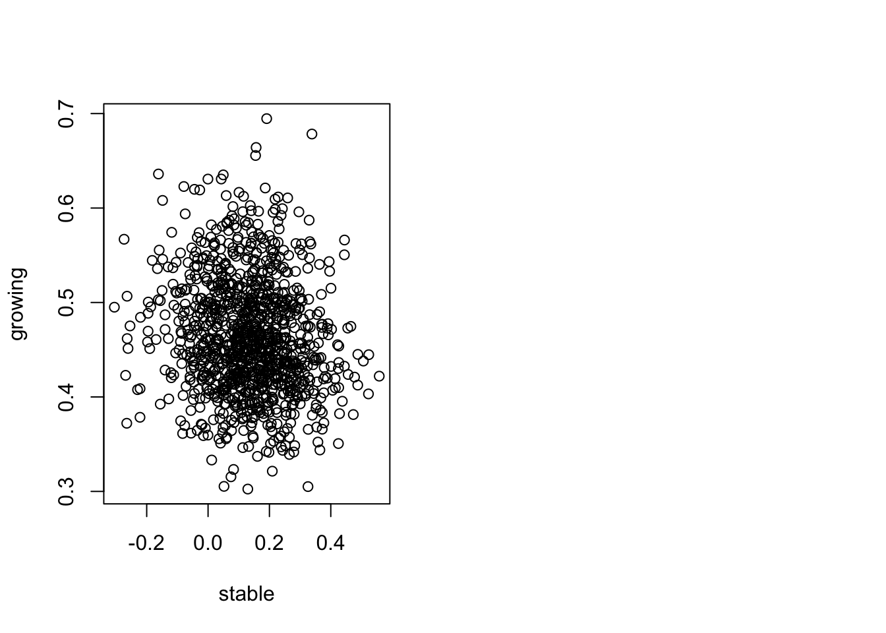
Finally, look at whether any of the above samples have similar DN and Ep calls: it appears that this call is random, and the subtype does not dictate growth rate
## [1] "extended list"## , , = growing
##
##
## Basal Lum
## Basal 2 3
## Lum 2 3
##
## , , = stable
##
##
## Basal Lum
## Basal 2 2
## Lum 1 1## [1] "narrow list"## , , = growing
##
##
## Basal Lum
## Basal 3 1
## Lum 3 3
##
## , , = stable
##
##
## Basal Lum
## Basal 3 0
## Lum 1 29.2 PAM50 (Parker) scoring
Here, we have used rsem counts in PAM50 subtyping.
Plot all samples together and compare the confidence and scores in different subtypes: There is overlap between the LumB and Her2 scores, similarly Normal and LumA scores are similar

We can pull out the main markers of interest: ER, PGR, Erbb2 and Ki67 (or PCNA). We also compare these expression distribution of these markers to CD45, DN and Ep overall:
Notes:
- Pgr highest in luminal samples
- Esr1 dynamic range is lower
- Ar is higher in basal samples
- Pcna is higher in Basal


heatmap based on the previous markers:

 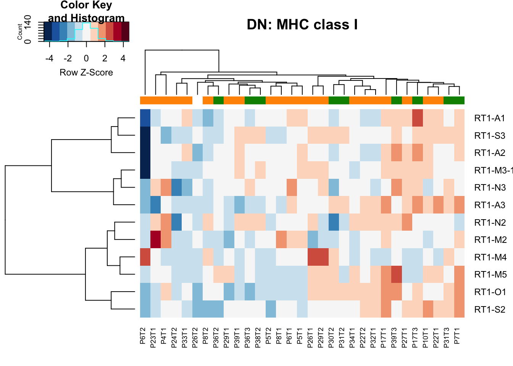
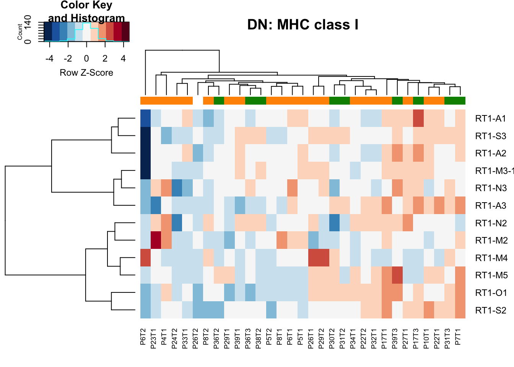
Based on the above calls, we can condense the calls:
- Her2, LumB are sumilar and can be combined with LumA
- Normal and Basal are most likely most similar


9.3 Clustering based on random genes
In this section we randomly select the most variable 50, 100, 200, 500 genes: we use both the standard deviation and coefficient of variation (sd normalised by the mean) to select these most variable genes.
Below is a correlation plot which visualises the concordance between the different methods.

9.4 Consolidating the different results
Below is a concordance map of the similarity between the different metrics calculated as
\[ \frac{N_{b,b}+N_{l,l}}{N_{total}} \]
where \(N_{b,b}\) is the number of cases which are basal in two comparisons and \(N_{l,l}\) the number of cases which are luminal in both comparisons.
Note that the values extend from 0.5 to 1, which indicates that any two methods overlap more than just by chance.
There is good overlap between the in-house specific list characterisation, and some overlap between pam50 calling and in-house short list.
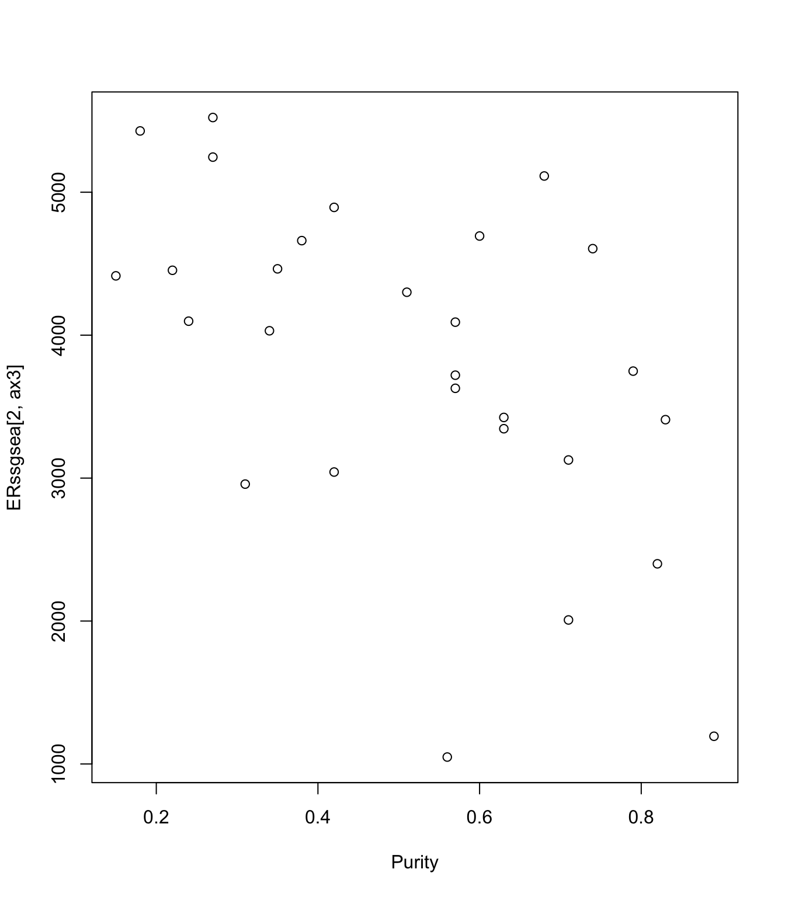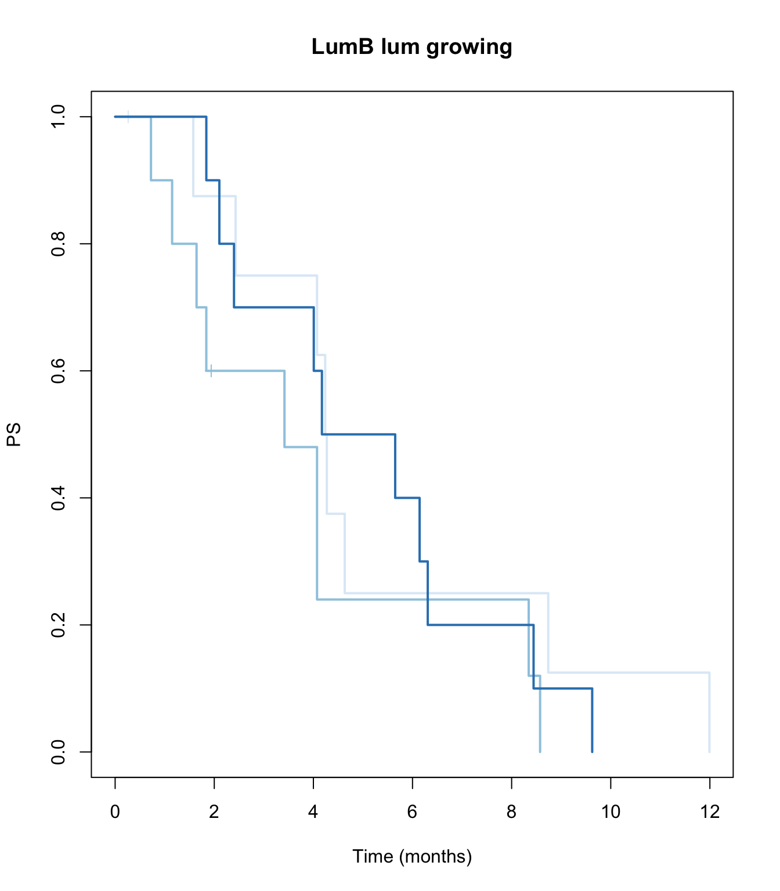
Below is a summary of the average expression values of the classes defined by the different methods:
- The targeted lists show differences in esr1, pgr, erbb2, pcna
- Ar has differing directions for the pam classifications
- Random genes selected show differences in pgr, erbb2, Ar and perhaps Mki67

 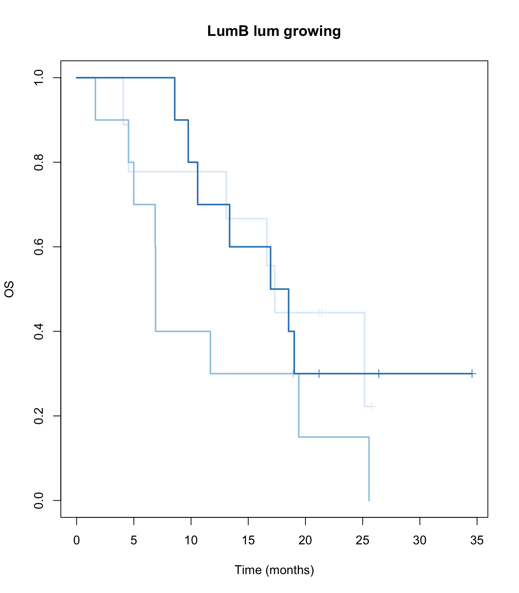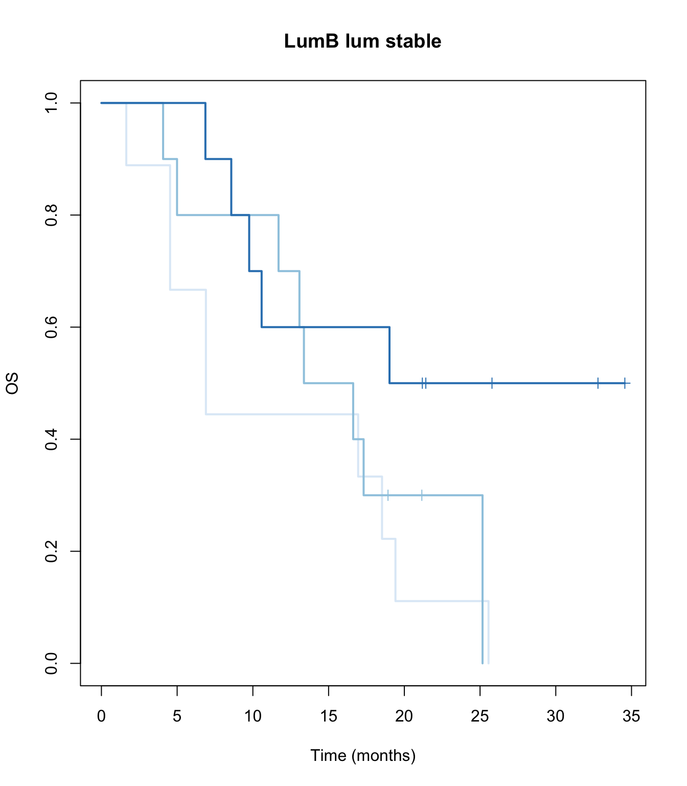
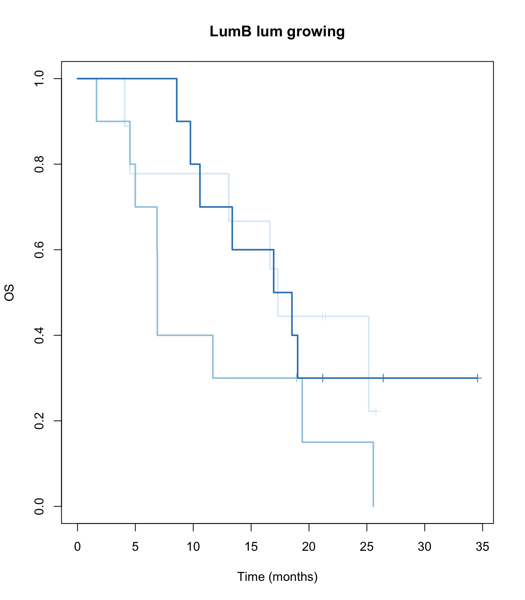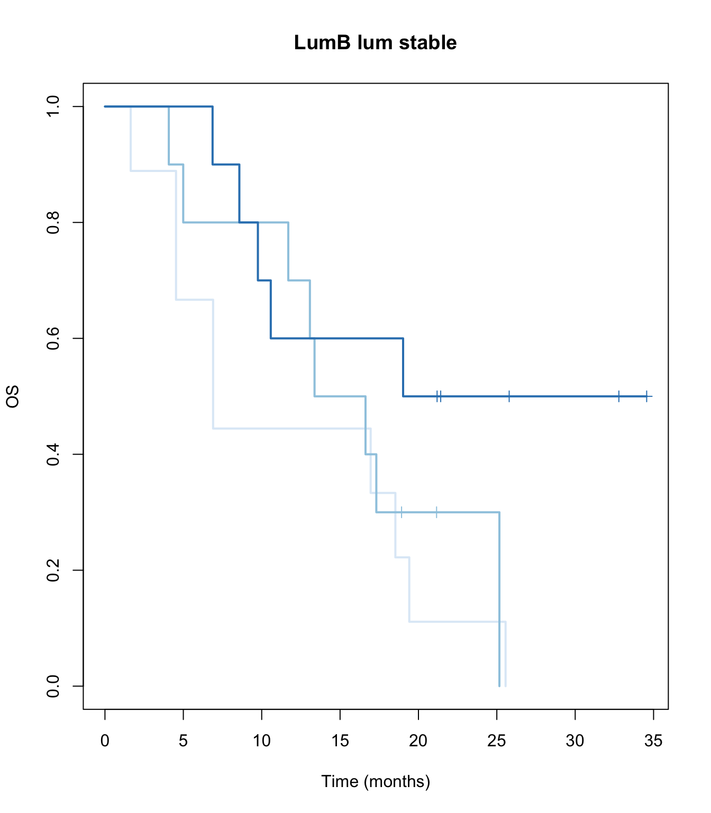
We can summarise the outputs for each sample below
| PAM50 | pamlong | pamshort | top50cov | top50sd | |
|---|---|---|---|---|---|
| 10L_D_Ep | Basal | Basal | Basal | 1 | 1 |
| 10R_BL_Ep | Lum | Lum | Lum | 2 | 1 |
| 10R_BU_Ep | Lum | NA | NA | 2 | 2 |
| 11L_B_Ep | Lum | Lum | Lum | 2 | 2 |
| 11N_D_Ep | Lum | Basal | Lum | 1 | 1 |
| 11R_D_Ep | Lum | Lum | Lum | 2 | 1 |
| 11R_C_Ep | Basal | Lum | Lum | 2 | 2 |
| 12L_D_Ep | Basal | Basal | Basal | 2 | 1 |
| 14N_C_Ep | Lum | Basal | Lum | 2 | 1 |
| 14N_D_Ep | Basal | Basal | Basal | 2 | 1 |
| 14R_B_Ep | Lum | Basal | Lum | 2 | 1 |
| 15N_C_Ep | Basal | Basal | Basal | 2 | 1 |
| 16L_C_Ep | Lum | Lum | Lum | 2 | 1 |
| 17N_D_Ep | Lum | Lum | Lum | 2 | 1 |
| 2N__Ep | Lum | Basal | Basal | 2 | 1 |
| 3N_B_Ep | Basal | Basal | Basal | 1 | 1 |
| 3R_C_Ep | Lum | Lum | Lum | 2 | 1 |
| 6R_B_Ep | Lum | Basal | Basal | 1 | 1 |
| 7N_A_Ep | Lum | Basal | Basal | 2 | 1 |
| 8L_D_Ep | Basal | Basal | Basal | 1 | 1 |
| 8R_CU_Ep | Basal | Basal | Basal | 2 | 1 |